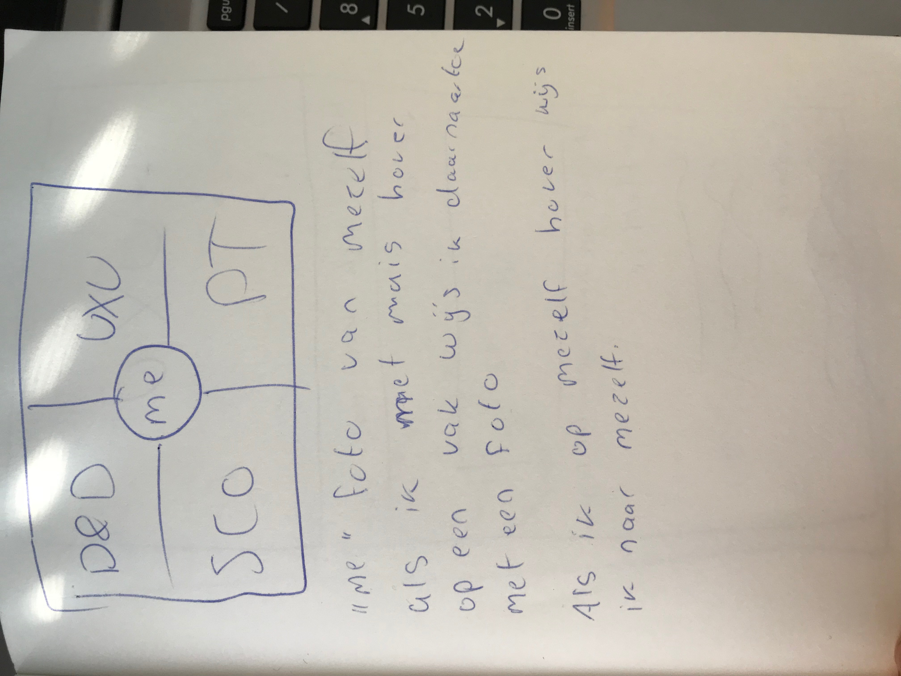
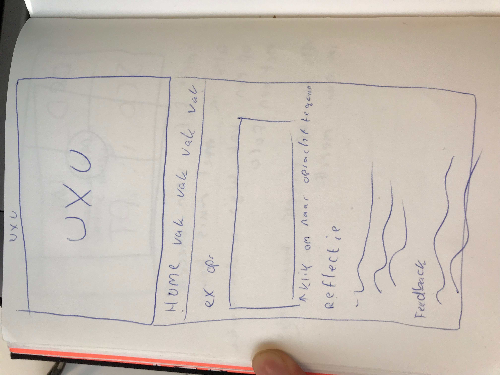
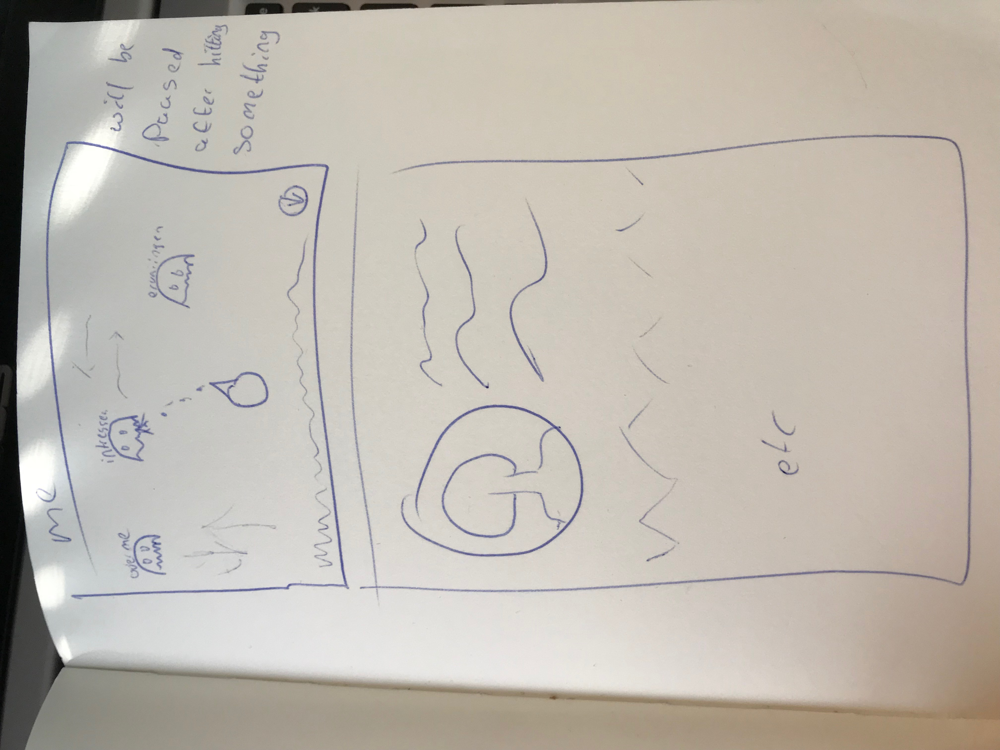
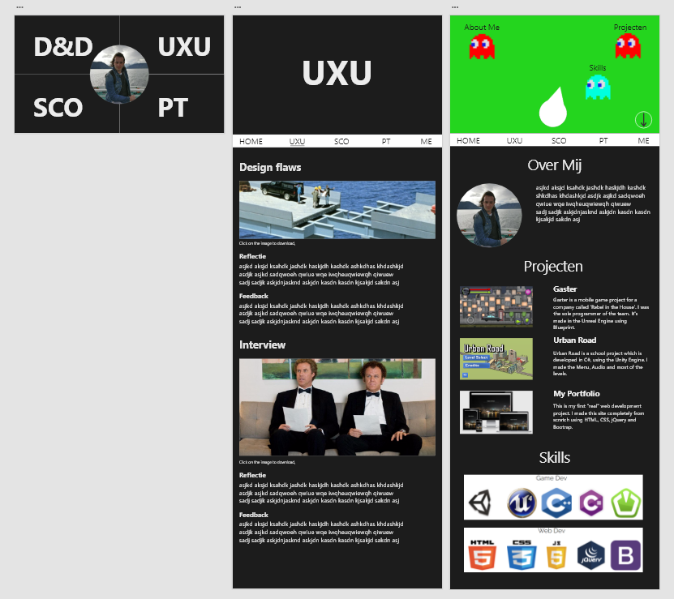

Ik wil een website maken met mijn werk die ook echt bij me past.
Op de home pagine wil ik een scherm laten zien waar alle 4 de vakken staan met in het midden een circel met mijzelf. Als ik met mijn muis op een vak hover dan wil ik mijzelf laten wijzen naar dat vak.
Als ik op een vak heb geklikt kom ik op een aparte pagina met dat alles van dat vak. Daar zullen de opdrachten, feedback en reflecties op komen.
Als ik op mijzelf klik kom ik op de pagina over mijzelf. Hier wil ik een dynamisch elementen hebben dat echt bij mij past... Een game. De pagina over mijzelf zal een one pager worden, met als navigatie een klein spelletje waar je op een enemy schiet om naar een specifiek gedeelte over mij te komen. Natuurlijk is het ook mogenlijk om gewoon naar onder te scrollen om zelf door de informatie heen te lopen. Het spelletje zal dan pauzeren.
  Functionaliteit per pagina
Zodra je op de home pagina komt, krijg je 4 vakjes te zien van verschillende vakken, en 1 circel in het midden met een foto van mij die naar de het vakje wijst waar je de muis op hebt staan. Als je op een van de 4 vakken klikt kom je op een pagine van het desbetreffende vak terecht.
Op de pagina van het vak zullen alle opdrachten staan die ik gemaakt heb met foto, reflectie, feedback en link naar de opdracht toe.
Als je vanaf de home pagina op het plaatje van mij klikt kom je op de pagina over mijzelf terecht. Hier zul je meteen op een spelletje terecht komen, die als navigatie dient voor die pagina. Je bestuurt je kannon met de muis om te richten en om te schieten. Als een enemy raakt waar "About Me" staat, scrollt je pagina naar het "About Me" gedeelte. Zo zijn er een paar enemies met verschillende kopjes.
Alle aparte pagina's op de home pagina na, zijn one pagers.
Ook komt er een back-end, hierin kan je alle pagina’s aanpassen, foto’s en tekst wijzigen. Je kan alleen inloggen als je al een account hebt, registreren is niet mogelijk.
Openstaande kwesties
Ik weet nog niet zeker hoe ik een spelletje kan laten alsof het een navigatie is. Dit moet ik nog uitgaan zoeken.
Opmerkingen voor design & techniek
Ik zal gebruik maken van SCSS als extentie van het normake css. Ook wil ik graag leren en gebruik maken van CSS Grid.
PHP form validation

Dit is een stukje code voor het valideren van een form in PHP.
JS form validation

Dit is een stukje code voor het valideren van een form in Javascript.